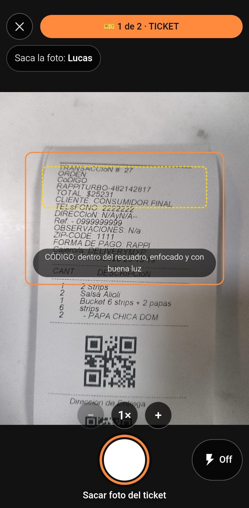
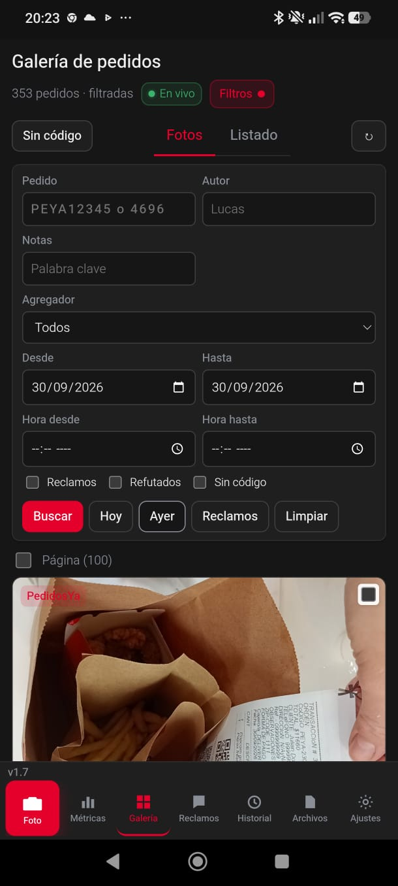
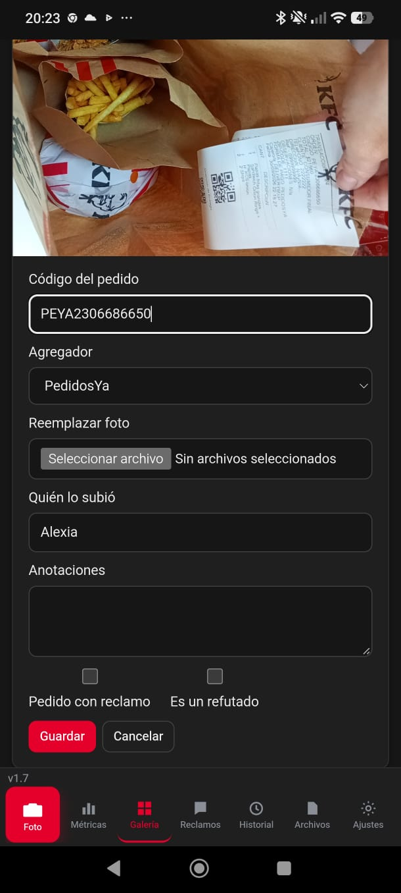
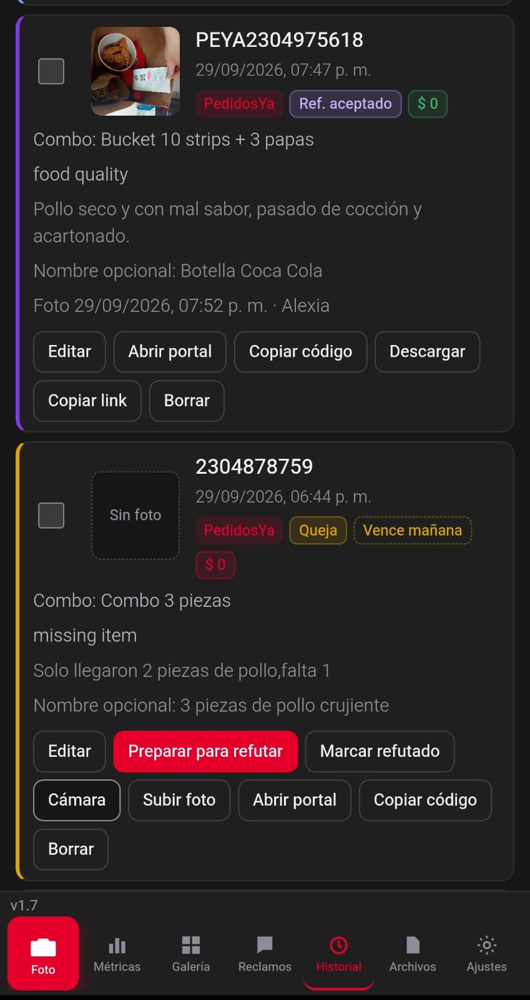
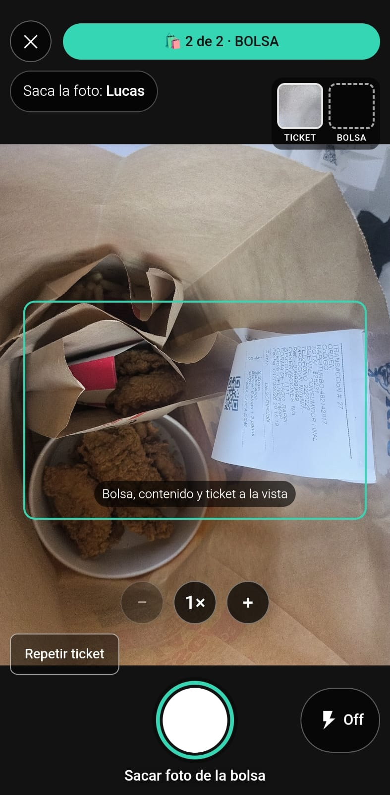
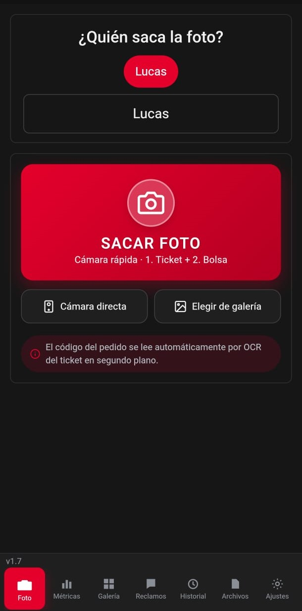

STAR-APP Delivery · La Plata
Equipo de fotografía y reclamos
Manual de uso
Cómo sacar las fotos de cada pedido, buscar en la galería, marcar quejas y refutar.
1 Sacar las fotos
Dos fotos por pedido: primero el ticket, después la bolsa. La cola sube y lee el código sola.
Antes de empezar: revisá el nombre en «¿Quién saca la foto?»: es el que queda en cada foto del turno. Y la hora de cada pedido es la de la foto, no la de la subida.
- Entrá a Sacar foto y elegí tu nombre.
- Ubicá el código dentro del recuadro y sacá la foto. Si hace falta, flash o zoom (− / 1× / +).
- Después, la bolsa completa con el ticket a la vista. Cuando diga «Par listo ✓», terminaste el par.
- Seguí con el siguiente par. Podés cerrar la app: la cola sigue subiendo en segundo plano.

Hacé
- Código completo y dentro del recuadro
- Esperá el enfoque antes de disparar
- Flash si hay sombra o poca luz
- Bolsa con el ticket visible arriba
Evitá
- Ticket cortado o fuera del recuadro
- Sombra encima del código
- Foto movida o sin enfoque
- Cubrir el ticket con la mano
Si la app te avisa: «oscura» → prendé el flash o buscá más luz · «borrosa» → apoyá el celular y esperá un segundo · «cortada» → alejá un poco: tiene que entrar todo el ticket.
2 Ver y buscar en la galería
Todas las fotos del turno, de 100 en 100.
- ‹ Anterior y Siguiente › cambian de página; tocá un número para saltar directo.
- En Pedido buscás mientras escribís: un número («4821»), «PEYA…» o el nombre de quien sacó la foto. Lo que coincide se resalta.
- Filtros rápidos: Hoy, Ayer, Reclamos, Sin código. Para fechas, autor o agregador, Filtros.
- Ver en la tarjeta muestra la foto completa, igual que se descarga.
- El checkbox «Página» marca las 100 de la página; descargá o borrá juntas desde la barra de abajo.

Si te pasaron un número, pegalo en Pedido: se resalta mientras escribís, sin presionar Buscar. Las fotos nuevas aparecen solas (punto verde); si estás en otra página, Ver salta a la primera.
3 Marcar un pedido como queja
Cuando un pedido tuvo un problema, marcalo: queda en el historial y en las métricas.
- Buscá el número del pedido en la galería.
- Tocá Editar.
- Marcá «Pedido con reclamo».
- Tocá Guardar. La tarjeta muestra el badge Reclamo y la queja entra en Historial y métricas.
Si el pedido ya está en la lista/Sheet del local: cruzalo en Reclamos y la app completa motivo y monto sola.

4 El proceso de refutado
Cómo viaja una queja y qué significa cada estado para el dinero.
| Estado | Qué pasó | Dinero |
|---|---|---|
| 🟡 Queja | Entró el reclamo, falta actuar | Descontada del local |
| 🔵 Refutado | Preparaste la refutación y fuiste al portal | En disputa |
| 🟢 Ref. aceptado | El agregador devolvió el dinero | Recuperada |
| 🔴 Ref. rechazado | No aceptaron la refutación | Perdida |
| ⬜ Queja vencida | Pasó el plazo del agregador | Perdida, sin opción de refutar |
Cómo se hace
- Pegá la lista/Sheet del día en Reclamos: la app cruza cada queja con su foto.
- Si dice «Elegí la foto», tocá la correcta entre las candidatas.
- Preparar para refutar descarga la foto, copia el código y abre el portal. Ahí pegá el código y subí la evidencia.
- De vuelta en la app, tocá Marcar refutado.
- Cuando el agregador responda, la queja queda Ref. aceptado o Ref. rechazado.
Cada agregador tiene días para refutar: Contados desde el día del pedido (Ajustes → Plazos de refutación; 0 = sin límite). «Vence en 2 d» avisa que está por vencer. Si se vence, queda «Queja vencida»: registrada, pero sin opción de refutar.

5 Repetir fotos y corregir el autor
Una foto para repetir o el nombre equivocado: se corrige acá.
Ya se subió el par y necesito repetir la bolsa
- Todavía no se subió: en la tira de abajo tocá «Repetir» — se rehace solo la bolsa. Si falló el ticket, en el paso de la bolsa está «Repetir ticket».
- Ya se subió: Galería → Editar → «Reemplazar foto» → elegí la foto → Guardar.
- El ticket no se guarda como foto. Si el código quedó mal, cambialo en Editar → «Código del pedido».

No cambié el nombre al empezar el turno
- Antes de la primera foto: tocá «¿Quién saca la foto?» en la pantalla Sacar foto. Queda guardado en ese celular: revisalo cada turno.
- De a una: Galería → Editar → «Quién lo subió» → nombre → Guardar.
- En lote: seleccioná las fotos (checkbox «Página») → «Cambiar autor» en la barra de abajo.

Regla simple: si la foto no está en la galería, se repite desde la cámara. Si ya está, se corrige con Editar.
6 Dudas rápidas
Las preguntas que más se repiten en el local.
- «La cola está larga y no sube»
- Seguí trabajando: la cola continúa sola y en orden. Si algo se traba, abrí la barra de cola y tocá Reintentar. Cerrar la app no la detiene.
- «El pedido quedó como Código no encontrado»
- Se sube igual como evidencia. Se reintenta solo; también podés completarlo desde la galería → tarjeta → Completar código.
- «Me salió borrosa / oscura»
- En la tira del último par tenés Repetir unos segundos (sección 5). Flash, esperá el enfoque y que se vea todo el ticket.
- «Apareció Queja vencida»
- Pasó el plazo del agregador. Queda registrada en el historial y en métricas, pero sin opción de refutar.
- «¿Dónde veo el dinero?»
- En Métricas: quejas del período, $ recuperado, $ perdido y los objetivos del local.
- «¿La hora es la de la subida?»
- No: es la hora en que se sacó la foto, aunque la cola tarde o la app se haya cerrado.
- «Me equivoqué de nombre en un montón de fotos»
- Seleccionalas en la galería (checkbox «Página») y usá «Cambiar autor» en lote — se arreglan juntas (sección 5).